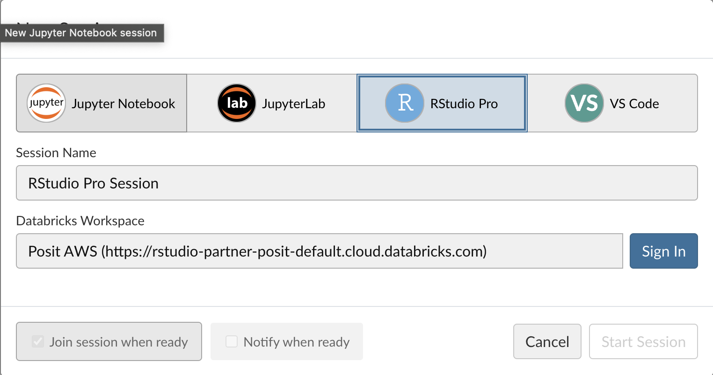
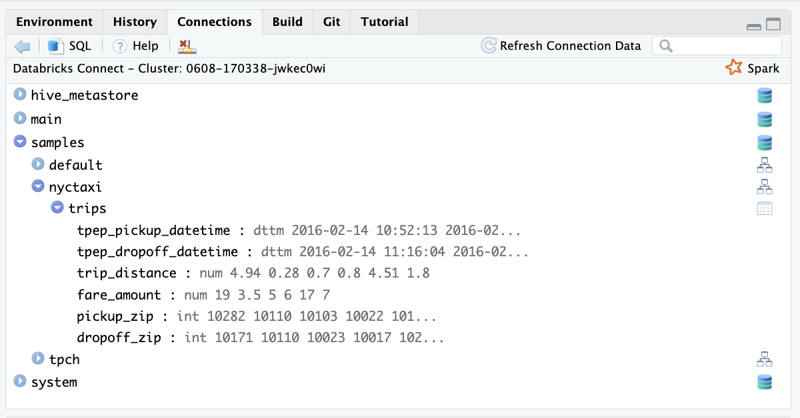
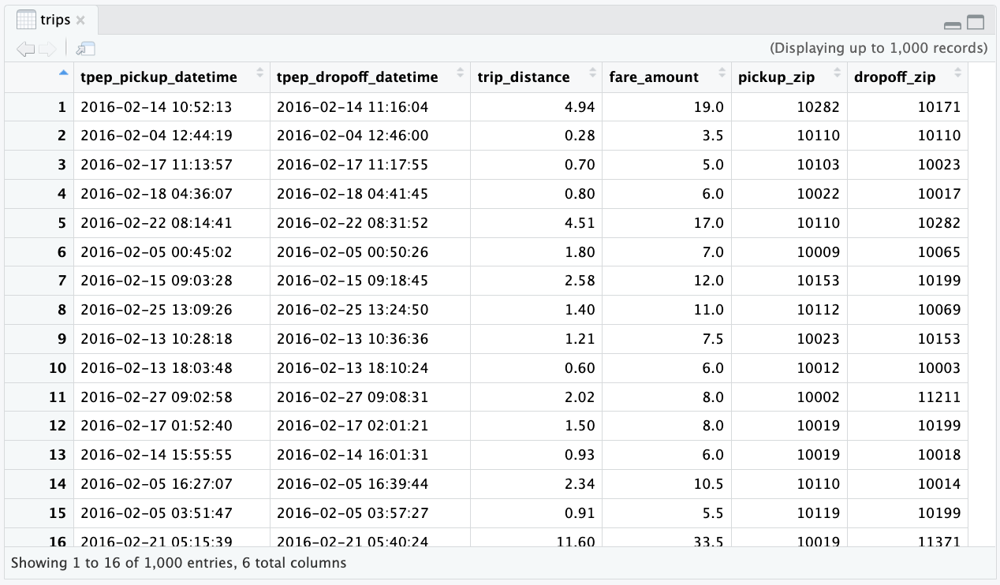
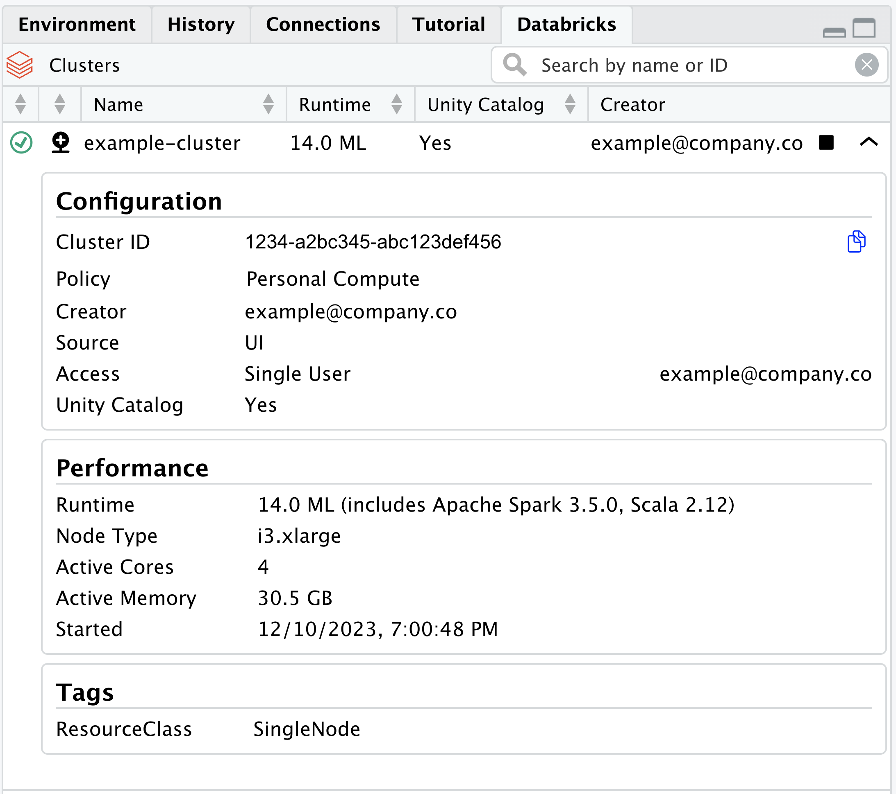
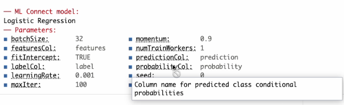

flowchart LR
subgraph lp[test]
subgraph r[R]
sr[sparklyr]
rt[reticulate]
end
subgraph ps[Python]
dc[Databricks Connect]
g1[gRPC]
end
end
subgraph db[Databricks]
sp[Spark]
end
sr <--> rt
rt <--> dc
g1 <-- Internet<br>Connection --> sp
dc <--> g1
style r fill:#fff,stroke:#666,color:#000
style sr fill:#fff,stroke:#666,color:#000
style rt fill:#fff,stroke:#666,color:#000
style ps fill:#fff,stroke:#666,color:#000
style lp fill:#fff,stroke:#666,color:#fff
style db fill:#fff,stroke:#666,color:#000
style sp fill:#fff,stroke:#666,color:#000
style g1 fill:#fff,stroke:#666,color:#000
style dc fill:#fff,stroke:#666,color:#000
Databricks Connect v2
Last updated: Mon Feb 26 14:01:47 2024
Intro
Databricks Connect enables the interaction with Spark clusters remotely. It is based on Spark Connect, which enables remote connectivity thanks to its new decoupled client-server architecture. This allows users to interact with the Spark cluster without having to run the jobs from a node. Additionally, it removes the requirement of having Java components installed in the user’s machine.
The API is very different than the “legacy” Spark and using the Spark shell is no longer an option. We have decided to use Python as the new interface. In turn, Python uses gRPC to interact with Spark.
sparklyr communicates with Databricks Connect
We are using reticulate to interact with the Python API. sparklyr extends the functionality, and user experience, by providing the dplyrback-end, DBI back-end, and integration with RStudio’s Connection pane.
In order to quickly iterate on enhancements and bug fixes, we have decided to isolate the Python integration into its own package. The new package, called pysparklyr, is an extension of sparklyr.
Package Installation
To access Databricks Connect, you will need the following two packages:
sparklyr- 1.8.4pysparklyr- 0.1.3
install.packages("sparklyr")
install.packages("pysparklyr")Setup credentials
To use with Databricks Connect, in run-time 13 or above, you will need three configuration items:
- Your Workspace Instance URL
- Your Personal Authentication Token (PAT), or a Posit Workbench instance configured to manage with Databricks services (see next section)
- Your Cluster ID
Posit Workbench
Posit Workbench can manage Databricks credentials on behalf of the user. For users of Posit Workbench, this is the recommended approach to setting up credentials as it provides an additional layer of security. If you are not currently using Posit Workbench, feel free to skip this section.
Details for how to setup and configure this feature can be found here.
For users who have signed into a Databricks Workspace via Posit Workbench, the credentials will be automatically configured and no additional setup is required. The only thing that still needs to be supplied when making a connection to Databricks is the cluster ID.

Environment Variables
We have developed this solution to align with other applications that integrate with Databricks. All applications need, at minimum, a work space (1), and an authentication token (2). For default values, those applications initially look for these environment variables:
DATABRICKS_HOST- Your Workspace Instance URLDATABRICKS_TOKEN- Your Personal Authentication Token (Not needed if using Posit Workbench)
Environment variables work well, because they rarely vary between projects. The thing that will change more often is the cluster you are connecting to. Using environment variables also makes connection safer, because token contents will not be in your code in plain text. We recommend that you set these two variables at your user level. To do this run:
usethis::edit_r_environ()That command will open a text file that controls the environment variables at the user level. If missing, insert the entries for the two variables:
DATABRICKS_HOST="Enter here your Workspace URL"
DATABRICKS_TOKEN="Enter here your personal token" # Not needed if using Posit WorkbenchThis is a one time operation. After saving and closing the file, restart your R session.
First time connecting
After setting up your Host and Token environment variables, you can now connect to your cluster by simply providing the cluster’s ID, and the method to spark_connect():
library(sparklyr)
sc <- spark_connect(
cluster_id = "Enter here your cluster ID",
method = "databricks_connect"
)In order to connect and interact with Databricks, you will need a specific set of Python libraries installed and available. To make it easier to get started, we provide functionality that will automatically do the following:
Create or re-create the necessary Python environment. Based on your OS, it will choose to create a Virtual Environment or use Conda.
Install the needed Python libraries into the new environment.
spark_connect() will check to see if you have the expected Python environment and prompt you to accept its installation if missing. Here is an example of the code and output you would expect to see:
sc <- spark_connect(
cluster_id = "1026-175310-7cpsh3g8",
method = "databricks_connect"
)
#> ! Retrieving version from cluster '1026-175310-7cpsh3g8'
#> Cluster version: '14.1'
#> ! No viable Python Environment was identified for Databricks Connect version 14.1
#> Do you wish to install Databricks Connect version 14.1?
#>
#> 1: Yes
#> 2: No
#> 3: Cancel
#>
#> Selection: 1 After accepting, the Python environment will be created with a specific name, and all of the needed Python libraries will be installed within. After it is done, it will attempt to connect to your cluster. Here is an abbreviated example of the output that occurs when selecting “Yes”:
#> ✔ Automatically naming the environment:'r-sparklyr-databricks-14.1'
#> Using Python: /Users/edgar/.pyenv/versions/3.10.13/bin/python3.10
#> Creating virtual environment 'r-sparklyr-databricks-14.1' ...
#> + /Users/edgar/.pyenv/versions/3.10.13/bin/python3.10 -m venv /Users/edgar/.virtualenvs/r-sparklyr-databricks-14.1
#> Done!
#> Installing packages: pip, wheel, setuptools
#> + /Users/edgar/.virtualenvs/r-sparklyr-databricks-14.1/bin/python -m pip install --upgrade pip wheel setuptools
#> Requirement already satisfied: pip in /Users/edgar/.virtualenvs/r-sparklyr-databricks-14.1/lib/python3.10/site-packages (23.0.1)
#> Collecting pip
#> Using cached pip-23.3.1-py3-none-any.whl (2.1 MB)
#> Collecting wheel
#> Using cached wheel-0.42.0-py3-none-any.whl (65 kB)
#> Requirement already satisfied: setuptools in /Users/edgar/.virtualenvs/r-sparklyr-databricks-14.1/lib/python3.10/site-packages (65.5.0)
...
...
...
#> Successfully installed PyArrow-14.0.1 cachetools-5.3.2 certifi-2023.11.17 charset-normalizer-3.3.2 databricks-connect-14.1.0 databricks-sdk-0.14.0 google-api-core-2.14.0 google-api-python-client-2.109.0 google-auth-2.25.0 google-auth-httplib2-0.1.1 googleapis-common-protos-1.61.0 grpcio-1.59.3 grpcio_status-1.59.3 httplib2-0.22.0 idna-3.6 numpy-1.26.2 pandas-2.1.3 protobuf-4.25.1 py4j-0.10.9.7 pyasn1-0.5.1 pyasn1-modules-0.3.0 pyparsing-3.1.1 python-dateutil-2.8.2 pytz-2023.3.post1 requests-2.31.0 rsa-4.9 six-1.16.0 tzdata-2023.3 uritemplate-4.1.1 urllib3-2.1.0
#> ✔ Using the 'r-sparklyr-databricks-14.1' Python environment
#> Path: /Users/edgar/.virtualenvs/r-sparklyr-databricks-14.1/bin/python Interacting with the cluster
RStudio’s Connection pane
Thanks to the new way we are integrating with Spark, it is now possible to display the same structure displayed in the Databricks Data Explorer. In Databricks, the current data structure levels are:
- Catalog
- Database
- Table
- Database
In the RStudio Connections Pane, you can navigate the data structure by expanding from the top level, all the way down to the table you wish to explore. Once expanded, the table’s fields and their types are displayed.

You can also click on the table icon, situated to the right of the table name, to preview the first 1,000 rows:

Using the Connection to Access Data
library(dplyr)
library(dbplyr)
library(sparklyr)
sc <- spark_connect(
cluster_id = "1026-175310-7cpsh3g8",
method = "databricks_connect"
)
#> ! Changing host URL to: https://rstudio-partner-posit-default.cloud.databricks.com
#> ℹ Retrieving info for cluster:'1026-175310-7cpsh3g8'
#> ✔ Cluster: '1026-175310-7cpsh3g8' | DBR: '14.1' [470ms]
#>
#> ℹ Attempting to load 'r-sparklyr-databricks-14.1'
#> ✔ Python environment: 'r-sparklyr-databricks-14.1' [1.8s]
#>
#> ℹ Connecting to '14.1 cluster'
#> ✔ Connected to: '14.1 cluster' [7ms]
#> After connecting, you can use dbplyr’s in_catalog() function to access any table in your data catalog. You will only need to pass the respective names of the three levels as comma separated character entries to in_catalog() in this order: Catalog, Database, and Table.
Here is an example of using tbl() and in_catalog() to point to the trips table, which is inside nyctaxi database, which is inside the *samples catalog:
trips <- tbl(sc, in_catalog("samples", "nyctaxi", "trips"))
trips
#> # Source: table<trips> [?? x 6]
#> # Database: spark_connection
#> tpep_pickup_datetime tpep_dropoff_datetime trip_distance fare_amount
#> <dttm> <dttm> <dbl> <dbl>
#> 1 2016-02-14 10:52:13 2016-02-14 11:16:04 4.94 19
#> 2 2016-02-04 12:44:19 2016-02-04 12:46:00 0.28 3.5
#> 3 2016-02-17 11:13:57 2016-02-17 11:17:55 0.7 5
#> 4 2016-02-18 04:36:07 2016-02-18 04:41:45 0.8 6
#> 5 2016-02-22 08:14:41 2016-02-22 08:31:52 4.51 17
#> 6 2016-02-05 00:45:02 2016-02-05 00:50:26 1.8 7
#> 7 2016-02-15 09:03:28 2016-02-15 09:18:45 2.58 12
#> 8 2016-02-25 13:09:26 2016-02-25 13:24:50 1.4 11
#> 9 2016-02-13 10:28:18 2016-02-13 10:36:36 1.21 7.5
#> 10 2016-02-13 18:03:48 2016-02-13 18:10:24 0.6 6
#> # ℹ more rows
#> # ℹ 2 more variables: pickup_zip <int>, dropoff_zip <int>After pointing tbl() to that specific table, you can then use dplyr to execute queries against the data.
trips %>%
group_by(pickup_zip) %>%
summarise(
count = n(),
avg_distance = mean(trip_distance, na.rm = TRUE)
)
#> # Source: SQL [?? x 3]
#> # Database: spark_connection
#> pickup_zip count avg_distance
#> <int> <dbl> <dbl>
#> 1 10032 15 4.49
#> 2 10013 273 2.98
#> 3 10022 519 2.00
#> 4 10162 414 2.19
#> 5 10018 1012 2.60
#> 6 11106 39 2.03
#> 7 10011 1129 2.29
#> 8 11103 16 2.75
#> 9 11237 15 3.31
#> 10 11422 429 15.5
#> # ℹ more rowsPosit Workench’s ‘Databricks Pane’
Posit Workbench provides users with a Databricks pane for direct access to available Databricks clusters. From this pane, users can view details about Databricks clusters and connect directly to them. More details about this feature can be found here.

Machine Learning
Machine Learning capabilities are currently available starting with Databricks Runtime version 14.1. Compared to “legacy” Spark, Spark Connect’s ML capabilities are limited. At this time, there is only one supported model, Logistic Regression, and two scaler transformers, namely Standard Scaler and Max Abs Scaler. sparklyr makes that functionality available.
Using for the first time
By default, the Python environment that sparklyr creates does not include libraries that relate to Machine Learning. These include Torch and “scikit-learn”. Some of the libraries are large in size and they may have Python requirements that are challenging to new users. Additionally, we have noticed there are not many users that need to utilize ML capabilities at this time.
The first time an ML function is accessed through sparklyr, you will be prompted to install the additional Python libraries which are needed to access such ML capabilities.
ml_logistic_regression(tbl_mtcars, am ~ .)
#> ! Required Python libraries to run ML functions are missing
#> Could not find: torch, torcheval, and scikit-learn
#> Do you wish to install? (This will be a one time operation)
#>
#> 1: Yes
#> 2: Cancel
#>
#> Selection: 1
#> Using virtual environment '/Users/edgar/.virtualenvs/r-sparklyr-databricks-14.1' ...
#> + /Users/edgar/.virtualenvs/r-sparklyr-databricks-14.1/bin/python -m pip install --upgrade --no-user torch torcheval scikit-learn
#> Collecting torch
...
Note
It is possible to install the ML libraries along with the required libraries. There may be several reasons to do this, including trying to recreate the environment after upgrading Python in your machine. Just pass install_ml=TRUE to the installation function:
install_databricks(cluster_id = "Enter your cluster's ID", install_ml = TRUE)or
install_databricks(version = "14.1", install_ml = TRUE)Easily fit and use
At this time, Logistic Regression is the only model supported. As usual, there are specific data preparation steps in order to run. sparklyr automates those steps, so all you have to do is pass the Spark data frame and the formula to use:
tbl_mtcars <- copy_to(sc, mtcars)
model1 <- ml_logistic_regression(tbl_mtcars, am ~ .)The output for Spark Connect based models has been upgraded. It will display the model parameters.
model1
#>
#> ── ML Connect model:
#> Logistic Regression
#>
#> ── Parameters:
#> ◼ batchSize: 32 ◼ momentum: 0.9
#> ◼ featuresCol: features ◼ numTrainWorkers: 1
#> ◼ fitIntercept: TRUE ◼ predictionCol: prediction
#> ◼ labelCol: label ◼ probabilityCol: probability
#> ◼ learningRate: 0.001 ◼ seed: 0
#> ◼ maxIter: 100 ◼ tol: 1e-06As shown in the following screenshot, the new output features a first-of-its-kind tooltip, it will popup the description of the parameter when hovered over. This functionality works when used in RStudio, and any console that supports this kind of enhanced user experience.

To use the model, you can run ml_predict():
ml_predict(model1, tbl_mtcars)
#> # Source: table<sparklyr_tmp_table_094111f1_5410_4fc4_a728_e2b10f13eaa0> [?? x 13]
#> # Database: spark_connection
#> mpg cyl disp hp drat wt qsec vs am gear carb prediction
#> <dbl> <dbl> <dbl> <dbl> <dbl> <dbl> <dbl> <dbl> <dbl> <dbl> <dbl> <dbl>
#> 1 21 6 160 110 3.9 2.62 16.5 0 1 4 4 0
#> 2 21 6 160 110 3.9 2.88 17.0 0 1 4 4 0
#> 3 22.8 4 108 93 3.85 2.32 18.6 1 1 4 1 1
#> 4 21.4 6 258 110 3.08 3.22 19.4 1 0 3 1 0
#> 5 18.7 8 360 175 3.15 3.44 17.0 0 0 3 2 0
#> 6 18.1 6 225 105 2.76 3.46 20.2 1 0 3 1 0
#> 7 14.3 8 360 245 3.21 3.57 15.8 0 0 3 4 0
#> 8 24.4 4 147. 62 3.69 3.19 20 1 0 4 2 0
#> 9 22.8 4 141. 95 3.92 3.15 22.9 1 0 4 2 0
#> 10 19.2 6 168. 123 3.92 3.44 18.3 1 0 4 4 1
#> # ℹ more rows
#> # ℹ 1 more variable: probability <chr>Using feature transformers
These are the two feature transformers currently supported:
- Standard Scaler -
ft_standard_scaler() - Max Abs Scaler -
ft_max_abs_scaler()
To access simply call the function by passing a vector of column names. Please note that it will create a single column with an array field that contains all of the newly scaled values.
tbl_mtcars %>%
ft_standard_scaler(c("wt", "mpg"), "features") %>%
select(wt, mpg, features)
#> # Source: SQL [?? x 3]
#> # Database: spark_connection
#> wt mpg features
#> <dbl> <dbl> <chr>
#> 1 2.62 21 c(-0.610399567481535, 0.150884824647656)
#> 2 2.88 21 c(-0.349785269100972, 0.150884824647656)
#> 3 2.32 22.8 c(-0.917004624399845, 0.449543446630647)
#> 4 3.22 21.4 c(-0.00229953792688741, 0.217253407310543)
#> 5 3.44 18.7 c(0.227654254761845, -0.230734525663943)
#> 6 3.46 18.1 c(0.248094591889732, -0.330287399658273)
#> 7 3.57 14.3 c(0.360516446093113, -0.960788934955698)
#> 8 3.19 24.4 c(-0.0278499593367465, 0.715017777282194)
#> 9 3.15 22.8 c(-0.0687306335925211, 0.449543446630647)
#> 10 3.44 19.2 c(0.227654254761845, -0.147773797335335)
#> # ℹ more rowsWhen you are done with you queries and computations, you should disconnect from the cluster.
spark_disconnect(sc)Environments
Install different version of databricks.connect
Here are three different options to create a custom Python environment, that will contain the needed Python libraries to interact with Databricks Connect:
To install the latest versions of all the needed libraries, use:
pysparklyr::install_databricks()sparklyrwill query PyPi.org to get the latest version ofdatabricks.connectand installs that version.It is recommended that the version of the
databricks.connectlibrary matches the DBR version of your cluster. To do this, pass the DBR version in theversionargument:pysparklyr::install_databricks("14.0")This will create a Python environment and install
databricks.connectversion 14.0, and it will automatically name itr-sparklyr-databricks-14.0. By using this name,sparklyris able to know what version ofdatabricks.connectis available inside this particular Python environment.If you are not sure about the version of the cluster you want to interact with, then use the
cluster_idargument. We have added a way to pull the cluster’s information without starting Spark Connect. This allows us to query the cluster and get the DBR version:pysparklyr::install_databricks(cluster_id = "[Your cluster's ID]")
Restricted Python environments
If your organization restricts Python environment creation, you can point sparklyr to the designated Python installation. To do this, pass the path to the environment in the envname argument of spark_connect():
library(sparklyr)
sc <- spark_connect(
method = "databricks_connect",
cluster_id = "Enter here your cluster ID",
envname = "Enter here the path to your Python environment"
)To successfully connect to a Databricks cluster, you will need to match the proper version of the databricks.connect Python library to the Databricks Runtime (DBR) version in the cluster. For example, if you are trying to use a Databricks cluster with a DBR version 14.0 then databricks.connect will also need to be version 14.0. Failure to do so can result in instability or even the inability to connect.
Besides datbricks.connect, the Python environment will also need to have other Python libraries installed. The full list is in the Python Libraries section.
Important
If your server, or machine, has only one Python installation and no ability to create Conda or Virtual environments, then you will encounter issues when connecting to a Databricks cluster with a mismatched version of databricks.connect to DBR.
Important - This step needs only to be done one time. If you need to connect to a different cluster that has the same DBR version, sparklyr will use the same Python environment. If the new cluster has a different DBR version, then it is recommended that you run the installation function using the new DBR version or cluster ID.
Python Libraries
Here is the list of the Python libraries needed in order to work with the cluster:
Required libraries:
databricks-connectdelta-sparkpandasPyArrowgrpciogoogle-api-python-clientgrpcio_status
ML libraries (Optional):
torchtorchevalscikit-learn
To enable R User Defined Functions (UDFs):
rpy2(see Run R code in Databricks)
What is supported
Here is a list of what we currently support, and do not support via sparklyr and Databricks Connect:
Supported:
- Integration with most of the
dplyr, andDBI, APIs - Integration with the
invoke()command - RStudio Connections Pane navigation
- Support for Personal Access Token security authentication for Databricks Connect
- Support for most read and write commands. These have only been tested in Spark Connect.
Not supported:
SDF functions - Most of these functions require SparkSession, which is currently not supported in Spark 3.4.
tidyr- This is ongoing work that we are focusing on insparklyr. We are implementing these functions using PySpark DataFrame commands instead of depending on the Scala implementation.